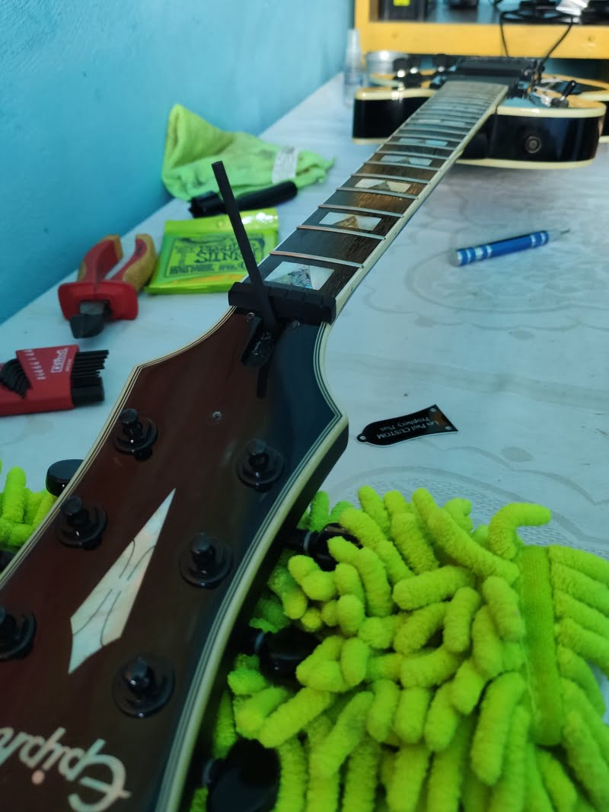

Guitar tech profesional

Mantenimiento integral del instrumento para su correcto funcionamiento
Modificaciones totalmente personalizadas
¿Por qué calibrar una guitarra?

Cada cierto tiempo, la guitarra puede empezar a presentar sonidos indeseados, esto se debe a que con el paso del tiempo, la fuerza ejercida por la tracción de las cuerdas, el uso y las condiciones ambientales, causan que el instrumento sufra deformaciones y desajustes en sus piezas. Es por esto, que es recomendable llevarla a nuestro luthier o guitar tech de confianza para que realice el mantenimiento preventivo o correctivo necesario.
Algunas de las tareas que el luthier realizara al calibrar:
- Regulación del Alma
- Ajuste a nuevo tipo de encordado
- Ajuste para nuevo tipo de afinación
- Altura de cuerdas
- Altura de micrófonos
- Calibración de la afinación del instrumento
- Ajuste de clavijas
- Cambio de cuerdas
- Ajuste de tornillería
- Prueba del instrumento y de su electrónica
- Hidratado del mástil o diapasón